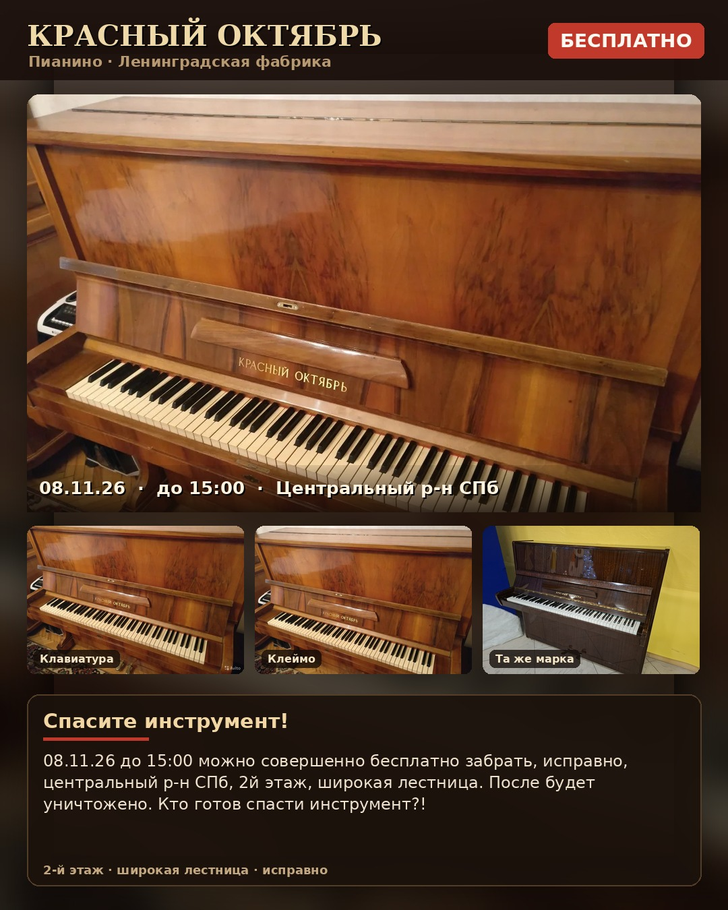

Пианино · Центральный р-н СПб · 2-й этаж · широкая лестница

Спасите инструмент!
08.11.26 до 15:00 можно совершенно бесплатно забрать, исправно, центральный р-н СПб, 2й этаж, широкая лестница. После будет уничтожено. Кто готов спасти инструмент?!